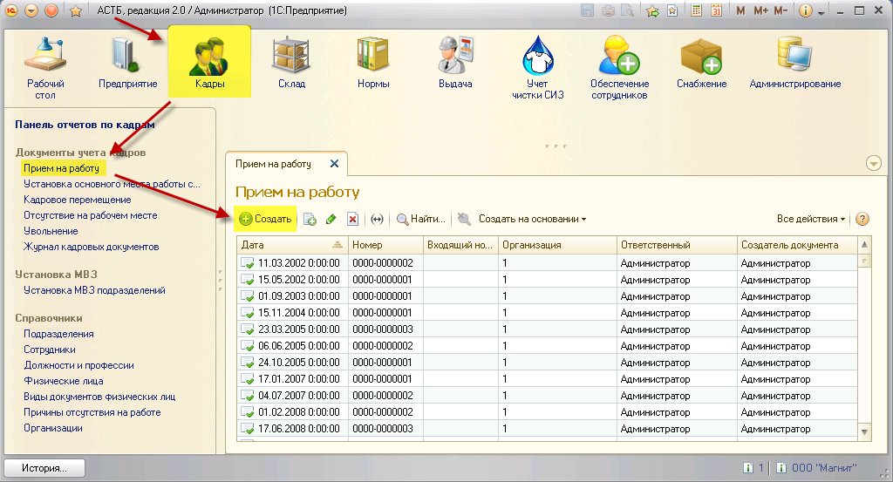
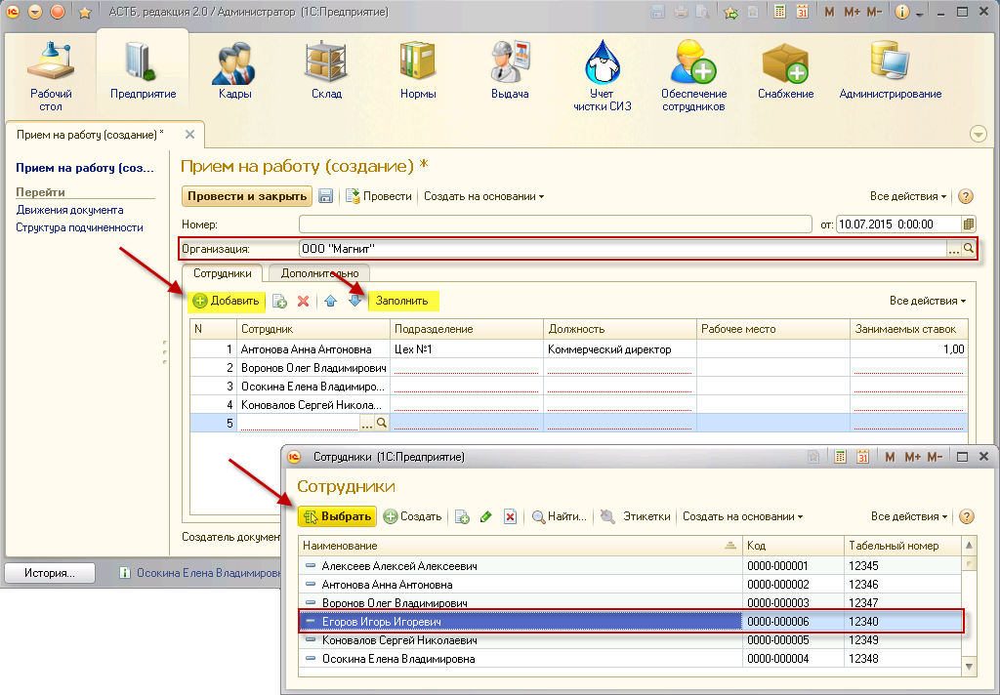
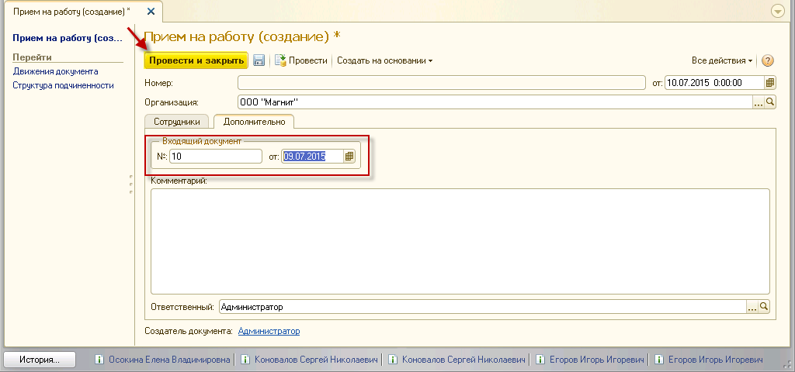
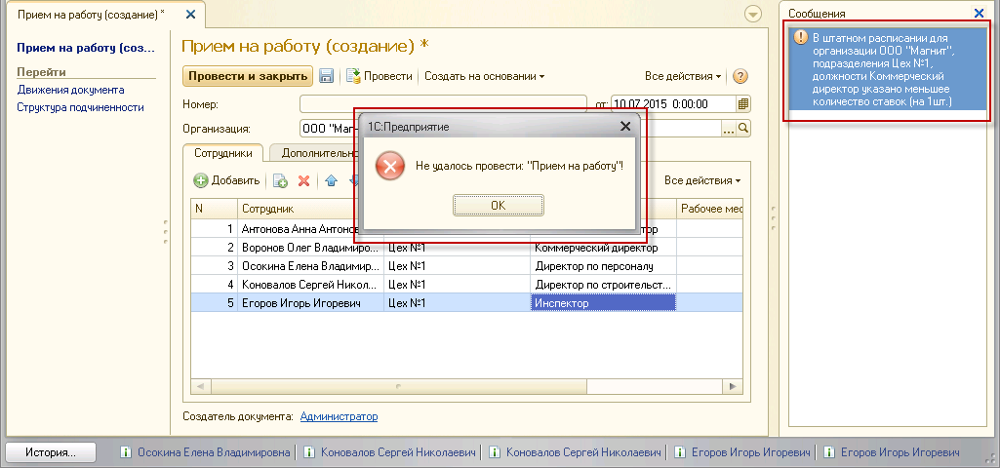
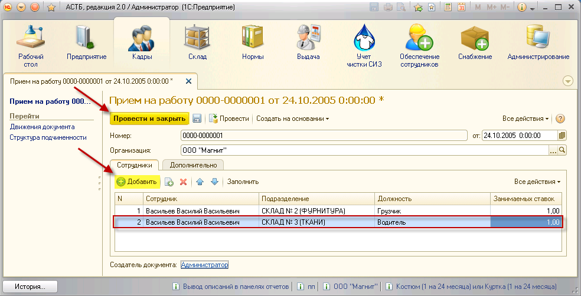
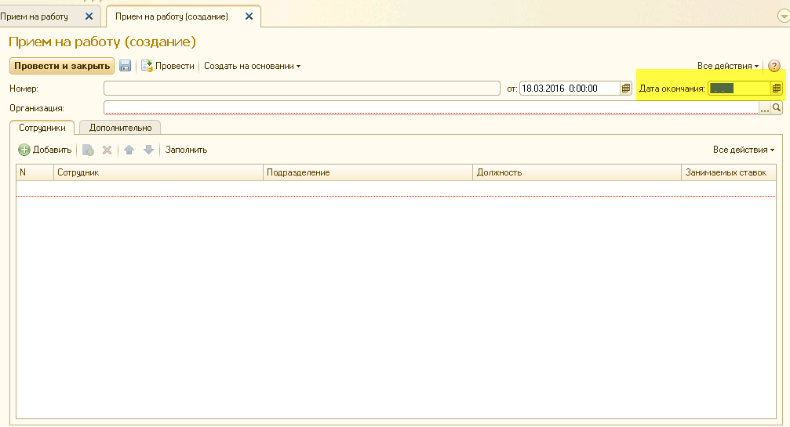

Чтобы принять сотрудника на работу, необходимо зайти в раздел «Кадры», выбрать документ «Прием на работу», нажать кнопку «Создать».

В открывшемся окне необходимо выбрать организацию. Существует два способа заполнения данных по каждому сотруднику:
1. Нажимайте кнопку «Добавить», чтобы построчно вносить данные по каждому сотруднику. После нажатия кнопки появится справочник «Сотрудники», из которого можно выбрать сотрудников для приема на работу. В каждой строке нужно будет заполнить поля «Подразделение», «Должность», «Занимаемых ставок» с помощью кнопки <...>
2. Нажмите кнопку «Заполнить», после чего столбец «Сотрудник» заполнится автоматически всеми сотрудниками, которые относятся к данной организации, но еще не устроены на работу. Затем заполните поля «Подразделение», «Должность», «Занимаемых ставок» с помощью кнопки <...> для всех сотрудников.

Если прием на работу происходит в соответствии с определенным документом, принятым организацией, его можно указать во вкладке «Дополнительно». Введите № и дату принятия документа.
После введения всех необходимых данных нажмите кнопку «Провести и закрыть».

При проведении документа осуществляется автоматическая проверка на наличие в штатном расписании организации должности, на которую принимается сотрудник, и на количество вакантных штатных единиц по данной должности. Если результаты проверки отрицательные, то документ не будет проведен и будет выведено сообщение об ошибке.

Если все данные указаны верно, документ будет проведен и сохранен в разделе «Кадры» как документ учета кадров «Прием на работу».
В ПК АСТБ существует возможность приема сотрудника на несколько должностей или ставок. Для оформления совмещения необходимо в документе «Прием на работу» добавить строку и заполнить все необходимые поля («Сотрудник», «Подразделение», «Должность» и «Занимаемых ставок»), изменив должность и подразделение при необходимости. Для сохранения изменений нажмите кнопку «Провести и закрыть».

В случае, если сотрудник занимает 2 и более должностей, необходимо указать основную должность. См. "Установка основного места работы сотрудника"
Для приема на работу на временную должность (например, при приеме стажера), в документе необходимо указать дату окончания договора.

Для отмены временного приема на работу необходимо открыть обработку "Отмена временного трудоустройства".